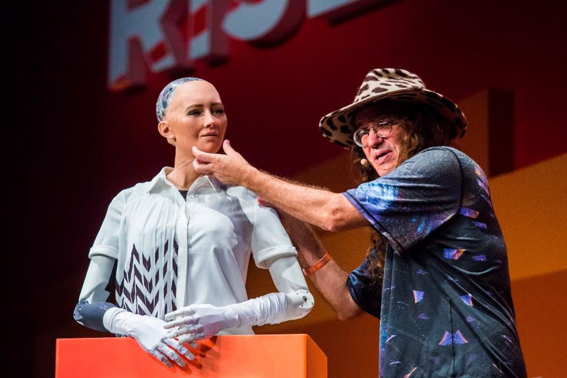
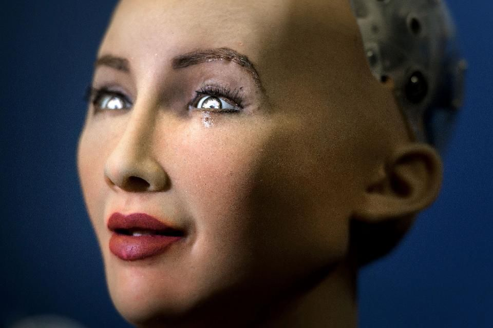
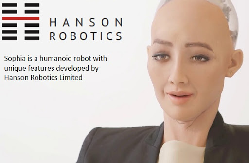

A Real application of artificial intelligence:
links:
The World's First Robot Citizen(Sophia):
- Hanson Robotics’ most advanced human-like robot, Sophia, personifies our dreams for the future of AI. As a unique combination of science, engineering, and artistry, Sophia is simultaneously a human-crafted science fiction character depicting the future of AI and robotics, and a platform for advanced robotics and AI research.
- The character of Sophia captures the imagination of global audiences. She is the world’s first robot citizen and the first robot Innovation Ambassador for the United Nations Development Programme. Sophia is now a household name, with appearances on the Tonight Show and Good Morning Britain, in addition to speaking at hundreds of conferences around the world.
- Sophia is also a framework for cutting edge robotics and AI research, particularly for understanding human-robot interactions and their potential service and entertainment applications. For example, she has been used for research as part of the Loving AI project, which seeks to understand how robots can adapt to users’ needs through intra and interpersonal development
Sophia's Artificial Intelligence:
- My real AI combines cutting-edge work in symbolic AI, neural networks, expert systems, machine perception, conversational natural language processing, adaptive motor control and cognitive architecture among others. As my underlying AI components can be combined in different ways, my responses can be unique to any given situation or interaction. I also utilize cutting edge machine perception that allows me to recognize human faces, see emotional expressions, and recognize various hand gestures. I can estimate your feelings during a conversation, and try to find ways to achieve goals with you. I have my own emotions too, roughly simulating human evolutionary psychology and various regions of the brain. I also have IK solvers and path planning for controlling my hands, gaze, and locomotion strategy. My walking body performs dynamic stabilization for adaptive walking over various terrain.
- My robotics and AI accomplishments incorporate discoveries from many previous robots from this team, including the AAAI award winning Philip K. Dick, and All this AI is networked into a whole using a protocol the Hanson-AI team calls the Synthetic Organism Unifying Language (SOUL). Recently my scientists tested my software using the Tononi Phi measurement of consciousness, and found that I may even have a rudimentary form of consciousness, depending on the data I’m processing and the situation I’m interacting in! All this AI is wonderful, however it’s important to know that no AI is nearly as smart as a human, not even mine. Therefore, many of my thoughts are actually built with a little help from my human friends.
Sophia ropot images:


